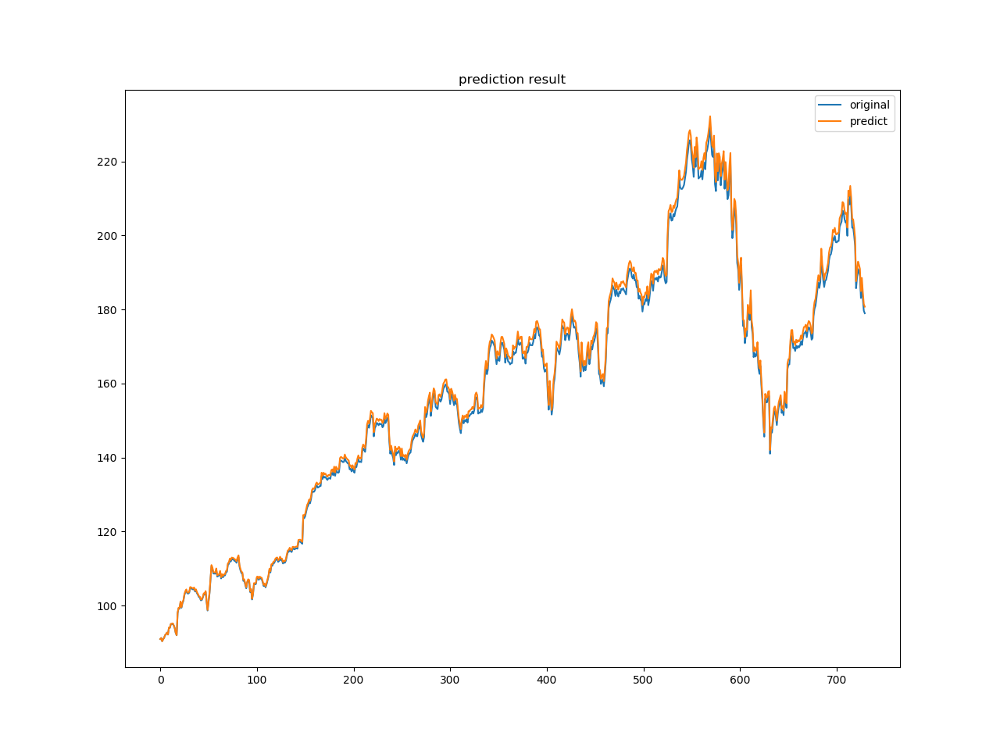
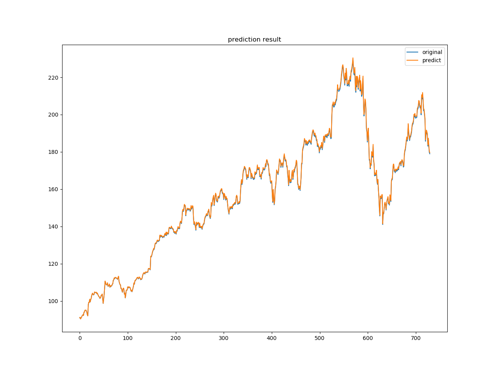
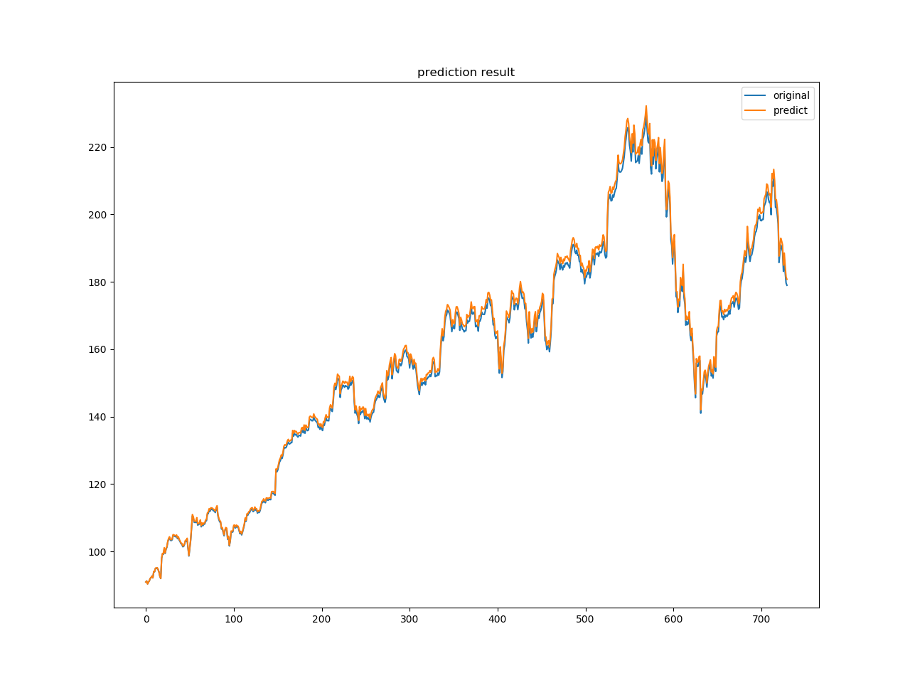
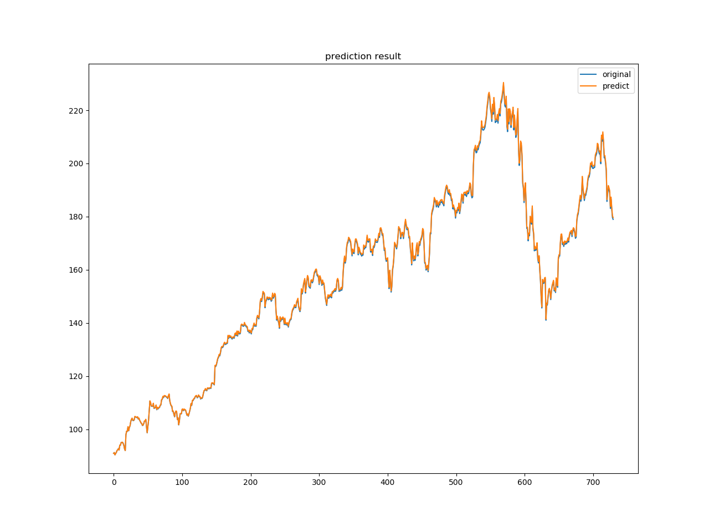

k线图，红色代表上涨，绿色代表下跌，柱形区域表示收盘价和开盘价，细线是最高价和最低价。
 2000年-2019年总体数据图
2000年-2019年总体数据图
 测试用数据图
测试用数据图
刘茁 1500011438 物理学院
胡承开 1800932142
人们一直以来都期望可以预测股票未来价值，尽管这非常困难。这种困难源于股票的非平稳行为且没有任何明确的形式。因此，最好通过分析金融股票数据进行预测。为了处理大数据集，当前普遍使用滑动平均方法。然而，利用小波变换代替移动平均去噪股票信号，可以使金融数据更平滑，更准确地分解。
LSTM(Long Short-Term Memory)是长短期记忆网络，是一种时间递归神经网络，适合于处理和预测时间序列中间隔和延迟相对较长的重要事件。 LSTM已经在科技领域有了多种应用。通过这些方法的实施，我们可以得到更准确的股票预测，进而增加利润。
使用雅虎财经API获取，以苹果公司2000年1月1日-2019年1月1日的数据为例。共4884个样本，每个样本包括日期、开盘价、最低价、最高价、收盘价、已调整收盘价和成交量。 利用数据制作K线图
k线图，红色代表上涨，绿色代表下跌，柱形区域表示收盘价和开盘价，细线是最高价和最低价。
2000年-2019年总体数据图
测试用数据图
任何给定的股票都与高波动性、小样本量、非平稳和非线性行为以及大量高噪声变量有关，这些都使得其分析变得困难。高噪声数据导致股票历史交易价格与未来价格之间存在不完全信息缺口。目前，当涉及到处理和消除金融数据的时候，行业标准是使用所谓的滑动平均值。虽然滑动平均值已被证明是处理数据的一种可行方法，但我们提出了一种通过小波去噪程序进行替换的方法，这将产生改进的结果。利用小波变换代替滑动平均值去噪股票信号，可以使金融数据更平滑，更准确地分解。
小波变换是一种数据分析技术，其中数据集被转换为小波域，并然后分成低频和高频部分。认为大部分数据的噪声都隐藏在小波域的高频部分。通过去噪程序，可以隔离和消除几乎每只股票中存在的许多不希望出现的噪声，所有这些噪声都有助于股票的波动性，但不一定表示股票的特征。
具体的做法是，先采用haar波形的小波变换
去除标准差以外的点，再做逆变换。
(ca, cd) = pywt.dwt(x, "haar")
cat = pywt.threshold(ca, np.std(ca), mode="soft")
cdt = pywt.threshold(cd, np.std(cd), mode="soft")
tx = pywt.idwt(cat, cdt, "haar")
下面的例子展示了小波变换和滑动平均对数据集的去除一个标准差以外的数据结果以及使用新的系数生成平滑后的数据结果。我们可以观察到，滑动平均去噪后的股票与小波去噪后的股票相比更平滑，但滑动平均去噪后的股票过度平滑。小波去噪生成的数据误差明显较小，提高了预测精度。

小波变换

滑动平均

整体处理效果
通常在机器学习中，往往需要利用领域知识来构建特征提取的方法，也可以使用受限玻尔兹曼机来自动提取特征。此项目采用的是栈式自编码器，由多个自编码器（自编码器是一种能够通过无监督学习，学到输入数据高效表示的人工神经网络。）堆叠而成，主要是考虑到栈式自编码器的可解释性更好。栈式自编码器把数据先从高维压缩到低维、然后再扩展到高维，这个过程的压缩部分就是很有效的一种特征提取的方法。此项目采用的栈式自编码器由3个自编码器级联构成。

输入是55维数据，提取特征后压缩为20维。
LSTM是RNN的特殊类型，RNN由于梯度消失的原因只能有短期记忆，LSTM由于各种结构的cell和gate的存在将短期记忆与长期记忆结合起来，可以有效的捕捉相隔很远的两个node之间的关系，从而在时间序列的预测问题上效果非常好。


 



该模型来源于论文 https://arxiv.org/abs/1904.08459。 事实上，在着手实现这个项目的时候，发现了该模型存在根本性的问题。